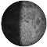

Gtk-Sunlight
Archivierte Anleitung
Dieser Artikel wurde archiviert, da er - oder Teile daraus - nur noch unter einer älteren Ubuntu-Version nutzbar ist. Diese Anleitung wird vom Wiki-Team weder auf Richtigkeit überprüft noch anderweitig gepflegt. Zusätzlich wurde der Artikel für weitere Änderungen gesperrt.
Anmerkung: Lt. Entwickler funktioniert das Programm seit 2012 nicht mehr, da sich das API von die.net geändert hat. Alternativen in Form eines automatisch aktualisierten Hintergrundbilds der Erde bieten beispielsweise die Programme Wallch und Variety an.
Zum Verständnis dieses Artikels sind folgende Seiten hilfreich:
GTK-Sunlight  oder "Real-time Sunlight Wallpaper" ist ein kleines Programm ausschließlich für die Desktop-Umgebung GNOME 2, das die Erde als Hintergrundbild in Echtzeit anzeigt. Zusätzlich werden der namensgebende aktuelle Sonnenstand und die globale Wolkenlage dargestellt.
oder "Real-time Sunlight Wallpaper" ist ein kleines Programm ausschließlich für die Desktop-Umgebung GNOME 2, das die Erde als Hintergrundbild in Echtzeit anzeigt. Zusätzlich werden der namensgebende aktuelle Sonnenstand und die globale Wolkenlage dargestellt.
Die benötigten Bilder werden von die.net zur Verfügung gestellt bzw. heruntergeladen – eine Internetverbindung ist daher Pflicht zur Nutzung des Programms. 
Wer sich an der Erde satt gesehen hat, kann alternativ auch den Mond / die Mondphase wählen. Die dazu verwendeten Bilder gibt es auch einzeln, konkret hier .
Das Hintergrundbild wird automatisch alle 30 Minuten aktualisiert. Das Programm ist nicht deutschsprachig, aber die wenigen verwendeten englischen Begriffe hat man sich schnell angeeignet. Wenn die vorhandenen Projektionsmöglichkeiten nicht ausreichen sollten, kann man sich auch direkt mit dem Programm Xplanet beschäftigen, das zur Erstellung der Bilder auf die.net verwendet wird. Dieses ist aber bezüglich der Konfiguration und Verwendung nicht so bequem wie GTK-Sunlight. Für eine einfache grafische Konfiguration kann jedoch z.B. xplanetFX verwendet werden, womit GTK-Sunlight teilweise übertroffen wird.
Installation¶
 GTK-Sunlight ist nicht in den offiziellen Paketquellen enthalten. Man kann aber ein "Personal Package Archiv" (PPA) [1] des Entwicklers nutzen oder das Programm selbst aus dem Quelltext erstellen (siehe Links).
GTK-Sunlight ist nicht in den offiziellen Paketquellen enthalten. Man kann aber ein "Personal Package Archiv" (PPA) [1] des Entwicklers nutzen oder das Programm selbst aus dem Quelltext erstellen (siehe Links).
PPA¶
Adresszeile zum Hinzufügen des PPAs:
ppa:realtime.sunlight.wallpaper/rsw
Hinweis!
Zusätzliche Fremdquellen können das System gefährden.
Ein PPA unterstützt nicht zwangsläufig alle Ubuntu-Versionen. Weitere Informationen sind der  PPA-Beschreibung des Eigentümers/Teams realtime.sunlight.wallpaper zu entnehmen.
PPA-Beschreibung des Eigentümers/Teams realtime.sunlight.wallpaper zu entnehmen.
Damit Pakete aus dem PPA genutzt werden können, müssen die Paketquellen neu eingelesen werden.
Nach dem Aktualisieren der Paketquellen kann das folgende Paket installiert [2] werden:
gtk-sunlight (ppa)
 mit apturl
mit apturl
Paketliste zum Kopieren:
sudo apt-get install gtk-sunlight
sudo aptitude install gtk-sunlight
Das Programm kann über den Eintrag "Anwendungen -> Zubehör -> Real-time Sunlight Wallpaper" gestartet werden.
Hinweis:
Ein Fehler beim ersten Programmstart bezgl. killall kann ignoriert werden. GTK-Sunlight versucht nur, sich selbst zu beenden. Ist das Programm aber noch nicht gestartet, erscheint diese Fehlermeldung.
Bedienung¶
| Optionen |
Nach dem Programmstart öffnet sich ein Fenster, in dem man die gewünschte Darstellung der Erde auswählen kann. Zur Auswahl stehen:
Plattkarte (equirectangular)
Alternativ gibt es noch die Einstellungen "Dawn to dusk" und "Moon Phase". Außerdem kann die Skalierung des Bilds an die eigene Bildschirmgröße (bzw. Auflösung) und – falls keine bildschirmfüllende Darstellung gewünscht ist – die zu verwendende Hintergrundfarbe angepasst werden.
Zum Schluss klickt man auf "Apply". Nun wird das Hintergrundbild heruntergeladen und automatisch ausgewechselt. Ein letzter Mausklick auf "OK" schließt das Programmfenster. Hier als Beispiel das Ergebnis einer Mollweide-Projektion:
GTK-Sunlight wird aber nicht wirklich beendet, sondern läuft im Hintergrund weiter. Um die Anwendung zu beenden, muss man
In einem Terminal-Fenster [3] den Befehl
killall gtk-sunlight
ausführen
Das Hintergrundbild über "System -> Einstellungen -> Erscheinungsbild -> Hintergrund" wieder gegen das ursprüngliche auswechseln. Alternativ gelangt man über
 auf den Desktop und "Hintergrund der Arbeitsfläche ändern" in dieses Menü.
auf den Desktop und "Hintergrund der Arbeitsfläche ändern" in dieses Menü.
Falls jemand den Bilderordner von GTK-Sunlight suchen sollte: er befindet sich im Homeverzeichnis unter ~/.gnome2/RealtimeSunlightWallpaper/gtk-sunlight.
Autostart¶
Wer das Programm automatisch mit der Benutzer-Anmeldung starten möchte, aktiviert die Option "Start Real-time sunlight wallpaper on login".
Möchte man das Programm nicht mehr nutzen, bitte daran denken, diese Option wieder zu entfernen. Das geht zur Not auch ohne das Programm (siehe Autostart).
 - um das Programm selbst zu
- um das Programm selbst zu - Erstellt mit Inyoka
-
 2004 – 2017 ubuntuusers.de • Einige Rechte vorbehalten
2004 – 2017 ubuntuusers.de • Einige Rechte vorbehalten
Lizenz • Kontakt • Datenschutz • Impressum • Serverstatus -
Serverhousing gespendet von